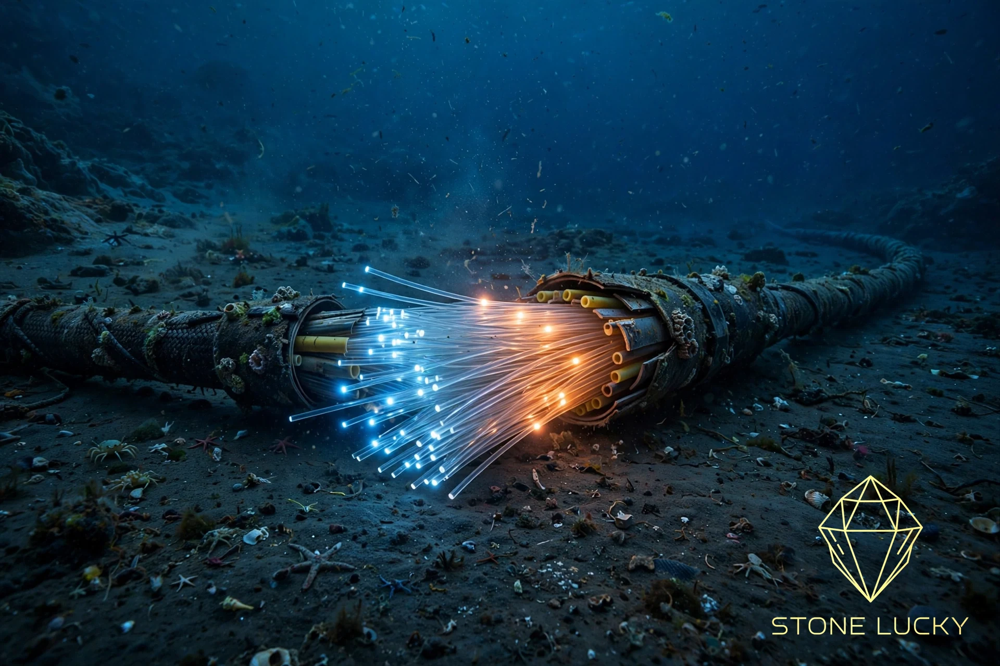
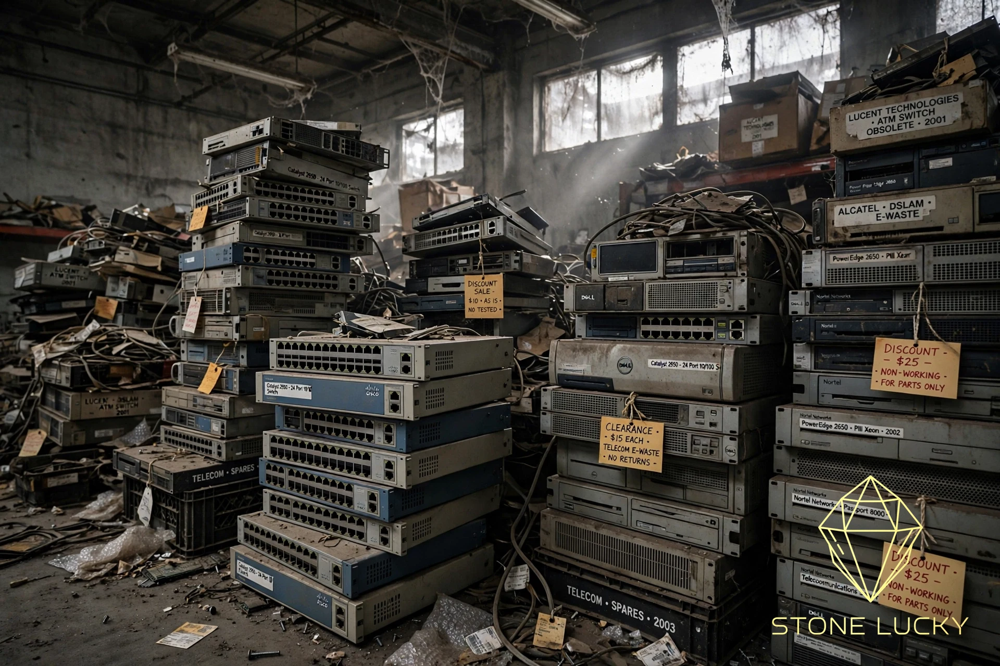
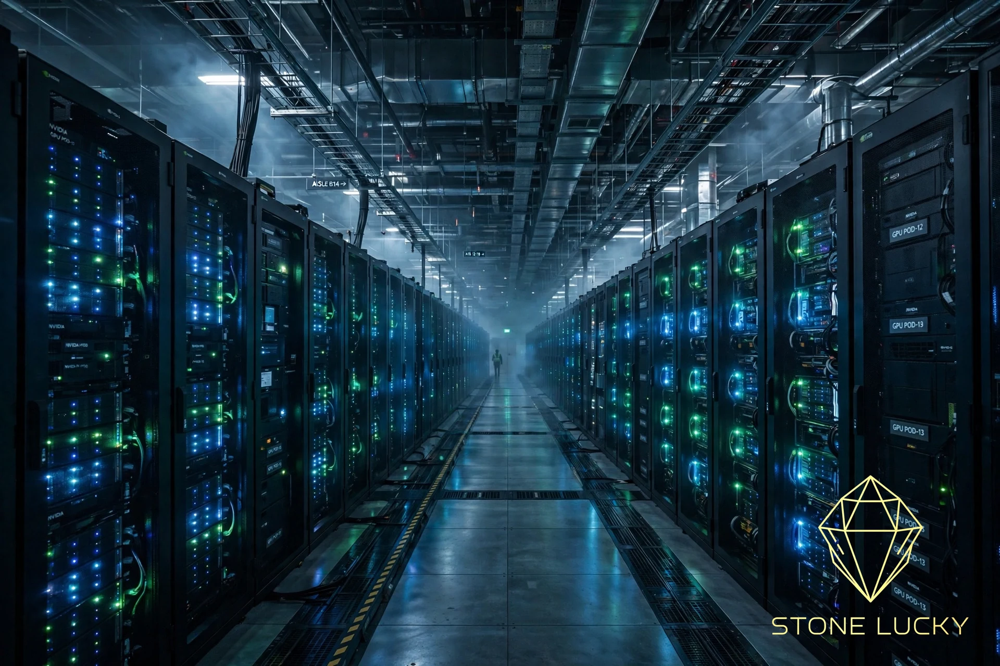

Every technology revolution starts the same way: markets do not bid up the technology itself — they bid up the bottleneck in its infrastructure. And when the bubble bursts, the fortunes are never made by the people who built the roads. Railroads, electricity and the internet all proved the rule. AI compute is now living it.

Around the turn of the millennium, Wall Street believed in a "law": internet traffic doubles every 100 days, and the future belonged to bandwidth. Global capital poured roughly $500 billion into telecom in five years, laying 39 million miles of fiber under oceans and land — enough to circle the Earth 1,500 times.
To keep the myth of scarce bandwidth alive, giants like Global Crossing and Winstar even played bandwidth swaps: Company A pays $100 million for capacity on Company B's fiber, Company B pays $100 million right back for capacity on A's. Not a cent of cash ever moves — yet both income statements magically gain $100 million of revenue. Meanwhile every enterprise on Earth was scrambling for switches; Cisco and Lucent order books stretched more than a year out. In March 2000, Cisco hit $80 a share and briefly passed Microsoft as the most valuable company in human history.
The script should feel familiar.
Look at any technology revolution and capital does the same thing: it walks the infrastructure supply chain with a magnifying glass and bids up whatever is choking expansion. In a mania, the physical bottleneck is the sexiest wealth code there is.
Now map that onto today. For three years, the AI trade has not really been about artificial intelligence — it has been a bottleneck relay along the compute supply chain: wafer capacity and advanced packaging first (Nvidia, TSMC), then servers and data centers, then power, nuclear and cooling ("AI ends in electricity"), then high-bandwidth memory, high-speed interconnect, custom silicon and a revival of the once-forgotten CPU — and most recently copper cabling, 800G/1.6T optical modules and co-packaged optics. Every solved bottleneck exposes the next physical limit. When money starts treating transformers and liquid-cooling plates as articles of faith, the relay has reached the far end of the supply chain.
But markets have a second act. When one link in the chain earns truly obscene excess profits, the profit itself becomes the largest bounty in the world — it mobilizes society's best minds and mountains of capital to smash that gate, whatever it takes.
The rule is brutal: bottleneck stocks earn their money while the gate still stands. The day the gate falls is the day the valuation avalanche begins.

Once technology demolished the bottleneck, the infrastructure industry faced its most thorough reshuffle. Dense wavelength-division multiplexing let engineers fire more than 160 colors of laser down a single strand of glass — one old fiber suddenly carried what 100+ fibers used to. By 2002, 97.5% of the world's fiber lay under oceans and underground with nobody using it: dark fiber. Transoceanic bandwidth prices fell 90%. More than 60 telecom giants, Global Crossing and Winstar among them, queued up for bankruptcy, and the industry shed roughly $2 trillion of market value.
When the downstream collapsed, yesterday's "obviously correct" switch-buying frenzy turned to disaster: discount flyers for switches littered the market, and expensive high-tech hardware became e-waste within months. Cisco fell from $80 to the teens — a drawdown of nearly 90%.
Electricity ended the same way. Excess capital flooded in, power prices collapsed, and the once-mighty power-infrastructure stocks became the dullest dividend stocks on the market — crushed under enormous depreciation, with almost no growth left.
Everyone says the surest money in a gold rush is selling shovels — that is where Nvidia's "AI shovel seller" nickname comes from. Almost nobody tells the second half of the story: shovel sellers only make the fast money of the rush's first few years. Once the fields are surveyed out or the tools iterate, warehouses of iron shovels become scrap. More than 90% of the mining companies and shovel makers that rose in the western gold rush later vanished into bankruptcy.
The century-long empires were built by light-asset latecomers who occupied the ecosystem around the miners. Henry Wells and William Fargo saw that the US mail was unreliable and prospectors had no safe way to send gold home, so they did two things: armed stagecoach transport for gold and goods, and buying gold right at the mines in exchange for paper drafts. Those two miner-serving businesses grew into American Express and Wells Fargo — which today earn more than $32 billion of combined annual net profit and have together been worth over $410 billion.
The list goes on. The cheap transport network the rail mania left behind produced Sears, the mail-order pioneer — the "Taobao plus department store" of a century ago — and Coca-Cola's national distribution empire. When electricity became as cheap as tap water, the true winners were not the light-bulb, copper-wire and rubber merchants, but the people who rebuilt production and daily life on cheap power: Ford's assembly line, white-goods appliances, Hollywood. Alcoa used ultra-cheap electricity to electrolyze aluminum — a metal once pricier than gold, the stuff of Napoleon III's show-off aluminum forks — into a commodity. The internet's ruins rhymed: the dark fiber under the oceans was picked up by latercomers for pennies, traffic costs fell 90%, and on that wreckage grew Google, Netflix, Amazon AWS, Taobao, WeChat and ByteDance — industries that were literally unimaginable before the infrastructure existed and got cheap.
In one line: the companies that make the traffic never beat the companies that use the traffic.
Here is the counterintuitive truth: when a technology becomes as indispensable as air and water, then — absent a monopoly — its commercial value becomes as cheap and profitless as air and water. Railways, electricity, the internet — AI will be no exception. A train ticket across a thousand kilometers costs about a hundred yuan; the electricity to smelt dozens of kilograms of steel costs less than three soft drinks; an HD video from the other side of the planet costs a few cents of data. Indispensable and highly profitable have never been the same thing.
So the fate of infrastructure is close to pre-written: mania, overinvestment, deleveraging, collapse — and a final form as a heavy-asset, high-risk, high-leverage industry earning utility economics: enormous capex, dismal returns on assets, payback periods long enough to induce despair. After the first speculative fever, infrastructure earns the social average rate of profit and not a cent more.
And yet, dialectically, the madness is unstoppable — and necessary. Infrastructure is, at its core, paying an enormous premium to compress time. A forest fire burns away the canopy giants so a new generation of saplings can finally reach the sun. China's high-speed rail, metros and urbanization covered in 30 years what took the West 200 — powered precisely by the excess returns of land development around new stations. Without excess profit, neither private capital nor government debt would ever fund build-outs of that scale; without overbuilding there is no scale effect; without scale, the technology never gets cheap; and without cheapness, the new industries built on top can never exist.
Since AI erupted, global capital has priced and repriced compute and the so-called AI supply chain, tugging back and forth — the signature of a prisoner's-dilemma moment in a great infrastructure cycle. On one side, everyone knows overinvestment ends in glut — and unlike rails and seabed fiber that serve for decades, today's hundreds of billions of compute chips may iterate away in one to two years. On the other side, abundant global liquidity and the terror of losing a seat at the table keep everyone playing: some are here to get rich, some just want their money to depreciate a little slower.
But the signal has appeared — money is getting expensive. According to the Financial Times and other public reporting, Anthropic surfaced in October with a chip financing codenamed "Project North Star," roughly $60 billion in total: about $42 billion of senior debt that needed chip partner Broadcom to provide a guarantee, and $18 billion of subordinated debt, of which Blackstone's $9 billion slice carries a 10% coupon. Comparable borrowers pay about 7% in the public bond market; above 10% is high-risk junk territory. Just four months earlier, Anthropic's similar subordinated paper priced at 8.5%. The repayment source is five years of chip-lease payments. Wall Street is charging a rising premium for exactly two things: chips that depreciate at terrifying speed, and default risk.
The giants' own war chests are thinning, too. Per its public earnings, Alphabet posted its first negative free-cash-flow quarter since going public in 2004 — about -$5.9 billion in Q2 2026, on roughly $44.9 billion of quarterly capex. And Anthropic's IPO filing discloses some $518 billion of future cloud, compute and infrastructure obligations, about 80% of them non-cancelable. A first-tier lab with $16.8 billion of quarterly revenue, paying junk-bond interest to buy its own shareholder's chips: that is the pincer the model companies are caught in. The tech giants want to fund them but their cash is draining; the market has money, but it is very expensive.

None of this is a bear case against artificial intelligence. The AI era has only just passed its initial infrastructure phase; the truly phenomenal applications have not appeared yet — most are still unimaginable — and the long-run value and market wealth AI will create are far from finished. But a staged slump, even a crash, is close to guaranteed along the way.
History offers a clock: the railway-asset mania ran about four years before the first rail crisis; early power stocks flourished about six years before AC power and synthetic plastics went mainstream; the fiber mania ran about five years before the bust. This AI infrastructure rally, held up by bottleneck-chasing, is unlikely to run much longer either. The technology that will dissolve the compute bottleneck is invisible today — but it will arrive fast, and when it does it will be creative destruction at full force. And when this infrastructure frenzy recedes, the AI application giants that will truly shine may right now be struggling in some small warehouse somewhere.
Two sentences to remember. First, the iron law: while a technology is so expensive that only giants can afford it, it is merely a casino for capital; only when it is so cheap that street-corner shops dismiss it as worthless does it truly become humanity's new era. Second, the warning: the people who bet that the internet would change the world watched their stocks fall 90% — and their judgment about the future was completely right. The road builders went broke and the car sellers got rich; those are two different things. The market eventually proving you right, and the market killing you on the way there, are also two different things.